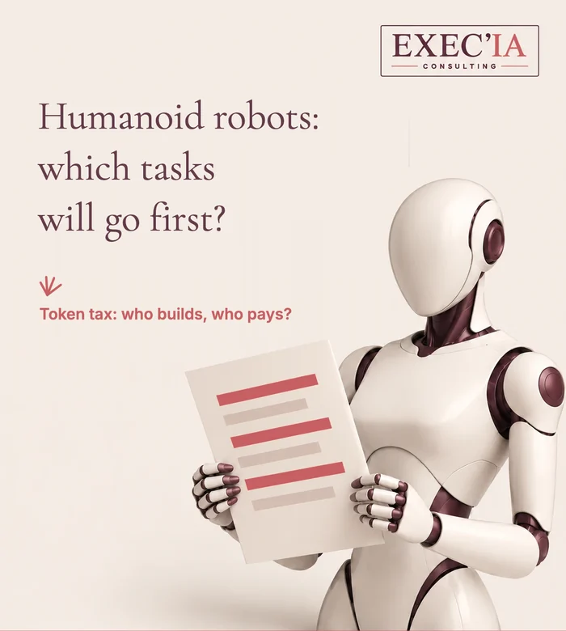

Humanoid robots: which tasks
will go first?
Short version →
Employees, managers, business leaders: a humanoid robot takes over tasks, rarely a whole job.
France’s labour statistics office, Dares, counts 457,500 vacancies in the private sector in Q2 2026. Humanoids will go first for those hard-to-fill roles: carrying, sorting, storing, night work.
Two questions reach beyond the company: who builds these robots, and who pays for social protection when part of the work no longer runs through wages? The “token tax” has entered the debate.
The mini-diagnostic in this article measures, in two minutes, how much of your week could go to a robot.

You run an SME, you lead a team, or you wonder what will become of your own role?
This article is for you.
A humanoid robot will not take your job in one go. It will chip away at it, task by task. The real question is which tasks, and in what order.
A Reel on French news channel LCI recently mentioned 300,000 unfilled positions in France. The country’s labour statistics office, Dares, counts more: 457,500 vacancies in the private sector in Q2 2026, according to its revised figure of September 15.
A vacancy is not always a role nobody can fill. Dares includes unoccupied positions, newly created ones and positions about to become free. So the figure does not say “this many people are missing”. It says: a lot of companies are hiring, right now.
🔑 Why think in tasks rather than jobs?
Because a job is a bundle. An order picker moves crates, but also spots a labelling error, reassures a customer on the phone, trains a temp. A robot can take over the first task. The others call for judgement, relationships and accountability.
Thinking in jobs leads to two opposite mistakes: believing nothing will change, or believing everything will disappear. Thinking in tasks shows what is really shifting, role by role.
Which jobs will humanoid robots target first?
Those where tasks are physical, repetitive or strenuous, in places designed for people: warehouses, workshops, shop stockrooms, building sites, farms, and healthcare settings for moving equipment around.
These are often the hardest roles to fill. The robot does not come first to take a seat that is occupied. It comes to cover a role the company cannot fill: night shifts, heavy handling, hazardous tasks.
Three questions to ask for every role:
- Which tasks could a robot take over?
- What will the job become without them?
- Which vacant role around you could a robot cover?
Why is none of this imminent?
The excitement is real, the reality slower. Even Apple is not expected to mass-produce its robots before 2028, according to analyst Ming-Chi Kuo. Today’s humanoids remain expensive, slow at movements people make without thinking, and fragile when the unexpected happens.
So the timeline gives you some breathing room. Use it to prepare, not to wait.
What is the good news for those who keep their jobs?
A robot produces without a salary, without overtime and without an annual raise. Once paid off, it becomes a predictable cost, which can hold back part of the price increases.
On one condition: the time freed up must go to more useful and more interesting work, not to piling on more. That is a leadership choice, not an automatic effect.
Who builds these robots?
In the first half of 2026, 97% of the humanoid robots delivered worldwide came out of Chinese factories. The two leading makers, AgiBot and Unitree, are Chinese.
Which raises a question for France and for Europe: design and run our own robots, or buy them off the shelf, together with the data they collect in our workshops and warehouses. For an SME, it is also a practical question: who will handle maintenance, spare parts and updates?
Who pays for social protection?
In France, pensions and social protection rely largely on contributions levied on wages. A robot pays none, and it is written off as an expense.
Bill Gates put it plainly in a long essay published at the end of August 2026: when you hire someone, you pay payroll taxes; when you buy a robot, you can often write it off right away. Without meaning to, the tax system nudges companies to replace people with machines.
What is the “token tax”?
A token is the unit of text that AI models process, and the unit they bill for every request. The idea is to levy a small percentage on those tokens, in other words on the use of AI, rather than only on the profits of the companies that build it.
Where does the debate stand?
1) Bill Gates argues for taxing AI tokens and robots.
2) In the United States, a bill introduced in Congress in August 2026, the AI Tax and Work Protection Act, proposes a 2% rate on the value of tokens when unemployment is at 5% or below, rising as unemployment rises.
3) The revenue would fund jobs and retraining. Some see it as the basis for a universal income.
The idea is not new. As early as 2017, France and the European Parliament were debating a tax on robots. What has changed is the base: the use of AI can now be measured down to the token.
What can an SME do right now?
🎯 Three steps, without spending a cent.
1) List the tasks in each role and the time they take.
2) Identify the hard-to-fill roles, and what makes them strenuous.
3) Decide what must stay human, before the question is forced on you.
The mini-diagnostic below takes the first step with you, in two minutes.
💬 Taxing AI to protect those who lose their work:
a good idea, or a brake on our companies?
Sources: Dares, job vacancies in Q2 2026 (revised figure, September 15, 2026); Journal du Web, August 11, 2026; Fortune, August 26, 2026; Fortune, September 1, 2026; Ming-Chi Kuo, via iThinkDiff; Euronews, September 29, 2026.
ROBOT mini-diagnostic · 2 minutes
Which tasks would you hand
to a humanoid robot?
Sort your tasks by the level of involvement you want:
Robot, Shared or Human.
Clicks only; your choices stay in your browser, nothing is sent.
Your tasks, to be sorted
For each task, estimate the time spent per week, then choose: Robot, Shared or Human. The values shown are an example, to be replaced with yours.
Unassigned time counts as time that stays human.
The time freed up would rather go to…
Several choices possible.
Which hard-to-fill role could a robot cover in your company?
Several choices possible.
Your summary
Hand over firstKeep your diagnostic:
it is not saved anywhere.
Then paste it into an email, a note or a message.
Indicative example: the right sorting depends on your company.
This mini-diagnostic helps you think; it does not measure technical feasibility.
Read the full articleabout 3,000 words
What a humanoid robot is, in 2026
A humanoid robot is a machine shaped like a person: two arms, hands, often two legs, a head carrying cameras. It combines three building blocks. A mechanical body, sensors that perceive the surroundings, and an AI “brain” that decides which movement to make.
That last part is what has changed. For decades, an industrial robot repeated a movement programmed to the millimetre, inside a cage, never straying from it. Recent AI models let a humanoid learn a movement by demonstration, recognise an object it has never seen and adapt when a part has been slightly moved.
Why a human shape?
Because our workplaces are built for people. Stairs, handles, shelves, trolleys and tools were all designed for our hands and our height. A human-shaped robot can, in theory, slip into them without anyone rebuilding the warehouse or the workshop.
That is also its limit. In a space designed for it, a specialised robot, a fixed arm or an autonomous trolley often does better and costs less. The humanoid makes sense where the environment changes, where tasks vary, and where nobody wants to refit everything.
What they can do, and what they cannot yet
Today, the most advanced humanoids can:
move and store crates or parcels;
feed a machine or a production line;
carry out simple visual checks;
take stock in a familiar place.
They still struggle with what a person does effortlessly: gripping something soft or slippery, finding their way in a cluttered space, understanding an ambiguous instruction, reacting to the unexpected. Their battery life is often counted in hours, and their pace stays below that of a trained operator.
A headline from Euronews at the end of September 2026 sums it up: the excitement around humanoids is running into reality. The promise is strong; large-scale deployment will take years.
The real economics
A robot does not just cost its purchase price. Add integration on site, safety measures around it, maintenance, spare parts, software updates, training for the staff who supervise it, and downtime when it breaks down.
Many manufacturers now offer pay-per-use rental, on a “robot as a service” model: a monthly subscription, maintenance included. For an SME, it is often the only sensible way to test without tying up capital it will never recover.
So the right question is not “how much does a robot cost?” but “how much does one hour of a task cost, compared with one hour of human work, at the same quality?” Until that calculation is done task by task, every decision is a gamble.
The body and the brain
Robots are often described as a mechanical revolution. They are first an AI revolution. The body is improving, but what changes the game is the robot’s ability to understand what it sees and to choose a movement.
For a business leader, that is good news: the questions to ask are the same as for any AI software tool. Which task, which data, which human oversight, who is accountable when it gets it wrong. The only difference is that here, a mistake can hurt someone.
Sector by sector
Logistics. The most advanced ground: moving crates, picking orders, loading trolleys. Recent warehouses are already highly automated; humanoids target older sites, where nobody wants to rebuild everything.
Manufacturing. Feeding a machine, moving parts at the end of the line, carrying out a visual check. Night work and strenuous roles come first.
Health and care. Carrying linen, meals and equipment, helping with certain movements. Care, listening and human contact stay human. Bill Gates even suggests reserving some jobs, such as caring for older people, for humans, even once machines are able to do them.
Construction, retail, agriculture. Carrying loads, clearing a site, restocking shelves at night, weeding, picking certain crops. Each time, it is the repetitive and strenuous movements that go first, rarely the know-how.
What changes for employees
When a task goes, the job does not necessarily disappear. It is reshaped. The forklift driver who no longer carries becomes the one who supervises three robots, handles incidents and trains newcomers. The order picker becomes the specialist for the complex orders the machine cannot handle.
None of this happens on its own. It takes training, recognition and often a change in pay. Without that, the robot is seen as a threat, and buy-in collapses before the machine is even switched on.
The role of the frontline manager
They are the ones who will see the robot every day. They will know before anyone else whether the machine saves time or wastes it. Involve them from the start: in choosing the tasks, setting up the pilot and defining the safety rules. A manager who was not consulted becomes, without meaning to, the first obstacle.
Safety and the legal framework
A robot moving among employees first raises a safety question. In Europe, the new Machinery Regulation will apply from January 20, 2027, and explicitly covers machines whose behaviour evolves through AI.
The European AI Act classifies as high-risk the AI systems that act as a safety component of a machine. On-board cameras also film people: GDPR applies, with information for employees and limits on the data kept.
In France, companies with at least 50 employees must consult their works council (CSE) before introducing a new technology that changes working conditions. Better to see it as an opportunity: the moment to explain, to hear concerns and to set the rules before rumour sets them for you.
Sovereignty, in practice
With 97% of worldwide deliveries coming from China in the first half of 2026, sovereignty is anything but abstract. A connected robot collects images, floor plans and work patterns. Where does that data go? Who can update the software, or switch it off?
For an SME, three reflexes are enough to start: ask where the data is hosted, check that the robot can run without a permanent connection, and make sure a local provider handles maintenance. These questions do not turn you into a geopolitics expert. They spare you a dependency you would discover too late.
The “token tax”, in detail
The US bill introduced in August 2026 sets two starting rates when unemployment is at 5% or below: 2% on the value of tokens, 3% on revenue from AI services. The higher unemployment climbs, the higher the rates. The revenue would fund jobs in housing, infrastructure, childcare and elder care.
Bill Gates, for his part, proposes taxing tokens and robots to fund retraining and strengthen safety nets. He also argues for “human-reserved” jobs, which society would choose to keep human even when a machine could do them.
The arguments for:
the tax follows the place where value is created;
it corrects the tax advantage given to machines over people;
it funds the transition as it happens.
The arguments against:
taxing use can slow innovation, especially in small companies;
tokens move easily from one country to another;
the cost may fall on the end user, which means on SMEs themselves.
For a European SME, the stakes are concrete: if such a tax ever comes in, it will be added to the price of the AI tools you use. Better to know now which ones really create value.
And universal income?
The idea returns with every wave of automation. Finland tested it in 2017 and 2018 with two thousand unemployed people: recipients’ well-being improved, while the effect on employment stayed modest. The debate is less about the principle than about the funding. That is exactly where the “token tax” comes in.
Questions to ask a supplier
Before any trial, six simple questions save months:
on which precise tasks has the robot proven itself, and where?
what is its real hourly pace, compared with an operator?
what happens when it does not understand a situation?
where do the images and data it collects go?
who steps in when it breaks down, and how fast?
can the rental be stopped without penalty after the pilot?
A serious supplier answers straight, with figures measured at other customers’ sites. If all you hear about is demonstrations, you know where you stand.
What your teams are wondering
They are not wondering whether the robot performs well. They are wondering what it will change for them: “will I keep my job?”, “will I have to learn to operate it?”, “who is responsible if it gets things wrong?”.
Answer before you are asked. Say clearly which tasks are targeted, which are not, and what will happen to the time freed up. A team that knows the rules accepts a trial far more readily than a team that discovers a robot one Monday morning. The first pilot is also a test of trust: what you do with the time saved will be watched by the whole company.
What I advise an SME leader
A five-step method, with no upfront purchase:
map the tasks of two or three key roles, with the time they take;
flag those that are strenuous, repetitive or hard to staff;
decide with your teams what must stay human;
cost one hour of a robotised task, rental and maintenance included;
if the numbers add up, run a 90-day pilot on a single task.
At the end of the pilot, you will know what the robot brings in your company, not in a manufacturer’s showroom. You will also know how your teams experienced it. That double proof is what lets you decide, or walk away without regret.
A typical example
Take a 60-person logistics SME that can no longer find order pickers for its night shift. Rather than buying a robot, management lists the night-shift tasks: one in two consists of moving crates from one zone to another.
It rents a robot for three months, for that single task, with a volunteer employee in charge of supervising it. At the end of the pilot, the night role stays human, but it changes in nature: less carrying, more checking. Hiring becomes possible again. The robot has not replaced an employee; it has made a role bearable.
What robots really ask of us
Less fascination, more method. Humanoid robots will arrive through tasks, one by one, and first where hands are short. Companies that have mapped their tasks in advance will choose. The others will follow the manufacturers’ timetable.
The question is not whether a robot can do your job. It is deciding, before you invest, what must stay human.